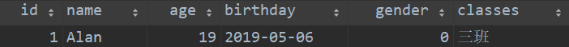
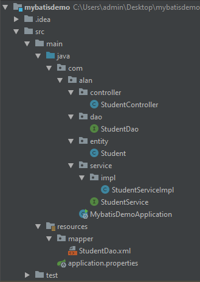
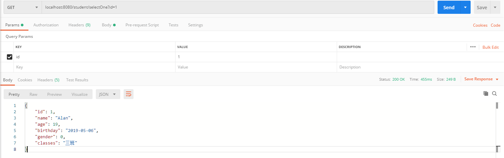

初识MyBatis
mybatis是一个可以自定义SQL,存储过程和高级映射的持久层框架。之前叫做ibatis。
MyBatis是什么？
学习一样技术，我们首先应该了解他能做什么，能解决什么问题。MyBatis是一个持久层的框架。持久层就是MVC模式中的dao层。负责与数据库进行交互。它可以建立数据库表和系统中的对象的一对一映射关系。这种框架我们称之为orm框架。不过MyBatis不像Hibernate那样可以自动生成sql语句，需要我们自己手写SQL语句，并且建立实体类和数据库的映射，所以MyBatis是一个半自动的持久层框架。
关于映射的含义，我们举个栗子说明一下。在数据库中有一个student表，里面有id，name，age，birthday，gender，class等字段，表中有一条数据，如下图。

而系统中也需要有一个与之对应的实体类。
1 | @Data |
我们这个表中的数据，对应表中的代码的话，应该是一个Student的对象。这个对象的各个属性的值即为表中的拿一条数据。而框架通过我们的配置，将这个表中记录和这个类的对象建立一对一的关系。我们称之为映射。映射建立之后，我们可以通过操作这个对象实现对数据库的修改。这样在考虑业务逻辑的时候就可以不在考虑我们的数据库中的表是如何存储的，而是对实体对象进行操作，简化开发。
那么，MyBatis这个框架可以做什么呢？
其实很简单，无非就是对数据库的增删改查。这是每个持久层框架都应该支持的事情。SQL可以做的事情，mybatis基本上都可以做。
MyBatis如何使用，下面写一个简单SpringBoot项目演示。
首先，在pom文件中添加Mybatis相关的坐标
1 | <!--mybatis启动器--> |
同时也要为项目添加web支持，坐标如下。
1 | <dependency> |
之后添加springboot启动类
1 | @SpringBootApplication |
然后建立Application.properties文件，添加如下配置。
1 | spring.datasource.driver-class-name=com.mysql.cj.jdbc.Driver |
然后我们在java目录下从创建entity，dao，service，controller包。项目结构如下图；

1 |
|
需要注意要在resource目录下，创建mapper目录，并创建映射xml文件。namespace要对应dao所在的目录，id要与方法名一致。
1 | <?xml version="1.0" encoding="UTF-8"?> |
最后我们在postman测试seleceOne方法，返回结果如下。
